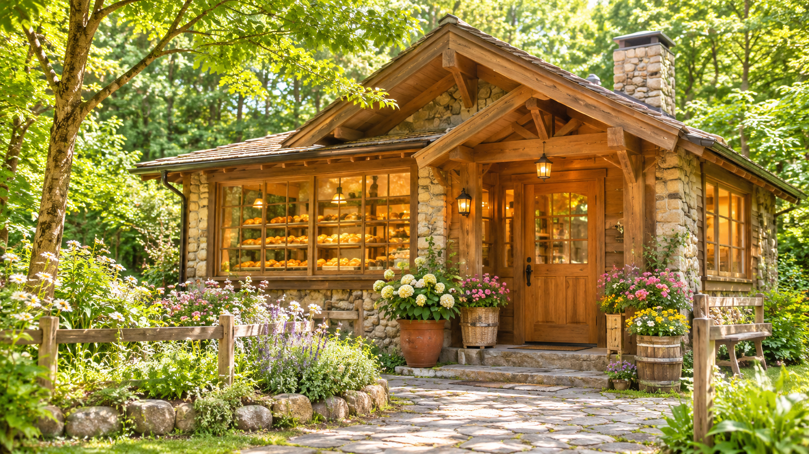
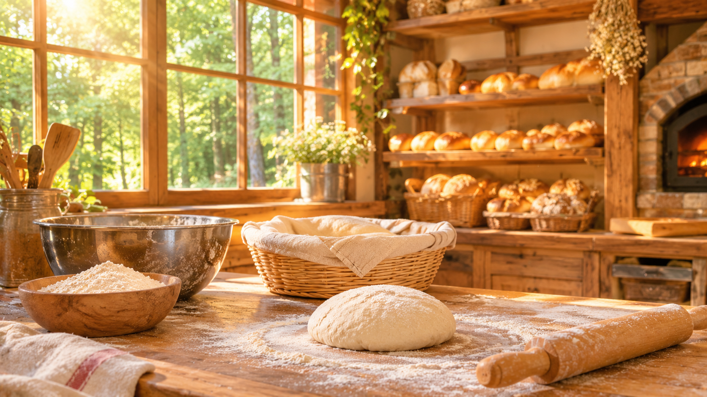

Story
お店の歩み
森のパン工房は「毎日食べても飽きない、やさしい味のパンを届けたい」という 思いから、小さなパン工房として歩みを始めました。当時は店主ひとりで生地を こね、焼き立てのパンを数種類だけ並べる、ささやかなお店でした。
開店当初は、近所の方が足を運んでくださるだけでしたが、「このパン、おい しいね」という一言に励まされ、少しずつ常連のお客様が増えていきました。 地元の小麦・果物・牛乳などを使ったパンづくりにも取り組み、土地の恵 みを活かした味を大切にしています。
森の木々が季節ごとに表情を変えるように、パンもまた、季節の素材とともに 移り変わります。素材を丁寧に選び、時間をかけて発酵させ、一つひとつ手づ くりで焼き上げる。その姿勢は、開店から長年たった今も変わりません。
これからも、毎日の食卓にそっと寄り添い、ほっとひと息つける場所でありた いと思っています。どうぞお気軽にお立ち寄りください。

